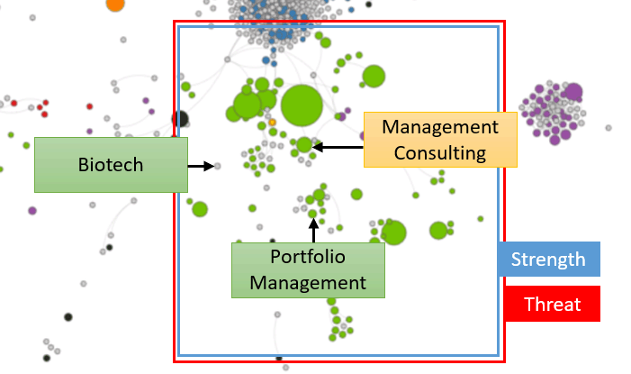

Austin has a thriving economy based on technology, services, education, and hospitality. Our analysis shows:
- Strengths in services related to software and data.
- Few Weaknesses. Possibly in Management Consulting.
- Opportunities in Portfolio Management, Biotech, and new industries such as Artificial Intelligence.
- Threats from over-concentration in tech industries.
We think about economies as the collection of problems that a region solves. Looking at Austin’s industries, we see a
large amount of activity in high-paying services. The largest circle represents corporate management jobs in the region.
Several of the smaller circles represent the strong presence of the tech industry. In addition to services, we see
hotels – the large red circle – and universities – the large orange one.
When we organize the industries based on their similarity to each other, we get a clearer picture of how the industries
relate to each other. The hospitality industries cluster together on the left. Education above that. Tech and services
in the middle. Austin’s economy benefits from this diversified activity, while its strengths in education and hospitality
also support its pipeline of high-skilled talent.
How Austin’s industries relate to each other
A network map that positions industries and clusters based on similarity
(Note: Gray circles mean that the region has little/no activity in that industry)

The graph on the left shows the trends from above. Austin should continue to support its projected Strength in services.
It should resolve its potential Weakness caused by reduced employment in Management Consulting. It has several Opportunities
it needs to unlock. For Portfolio Management, data indicates it could grow its existing employment. For Biotech, activity
in surrounding industries indicates that it could target this new industry. Austin could also expand into promising
new industries not currently displayed on this graph, such as Artificial Intelligence. Finally, Austin’s Threats mirror
its Strength – its extraordinary employment in tech industries makes it susceptible to a downturn. The city needs to
maintain communication with stakeholders about their confidence in current levels of employment.
As an additional note, while Austin adds jobs in services, it will likely face issues related to inclusiveness and inequality.
These jobs pay more than most of the network. It can leverage many different policy options to help its population
respond to these issues.
Austin might also want to see the publicly available analysis from above for neighboring cities such as Houston, San
Antonio, and Dallas, or for similar cities from outside the state such as Denver and Portland.
We use this analysis to help create FOCUS for cities. Once a city like Austin understands what’s possible, probable,
and optimal, it can create a strategy that builds around its strengths, resolves its weaknesses, unlocks its opportunities,
and hedges against its threats.